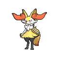

Who, what, when, where, and why am I?
Well I forgot where I am but I sure as hell know that I'm not copying Boxel
But in other words, I'm a half indian, half scottish cyclops[1], with many disorders you might want to look up[2].
I held the world record for Google Santa Tracker's mini game Quick Draw for a year[3].
I started video juegos as a main hobby in 2017, which led me to do many other computer-y tasks such as Blender, Photoshop, Illustrator, Font-making, and many others.
I was born within the first 6 hours of 2009 in Gilbert, AZ and resided in Tempe until 2011, when my family moved to San Diego, which lasted 9 years.
After the pandemic hit on March, Friday the 13th of 2020, my parents had no jobs, so we retreated back to Tempe. In 7th grade I met my lovely boyfriend Max[4].
But the fun didn't last for long, as poor poor Afton in 8th grade got hit by mlitiple trucks of mental health disorders and I declined into what I am now, a struggling, disowned, coding, near highschool dropout, hanging on by a thread[5].
"Why I am" seems too extistential so nah
Things I like
- My boyfriend
- Pokemon (I love X and Y I cannot wait for Legends: ZA bro)
- Undertale + Deltarune (I love Ralsei so much I cannot express it)
- OneShot(I love Niko so much I cannot express it)

- Ace Combat (Only got to play 6 and 7, but I've watched playthroughs of the rest except for most of Electrosphere because that game is insane)
- Baldur's Gate 3
- GTA V + Online
- Red Dead Redemption 2
- War Thunder
- Tom Clancy's Rainbow Six Siege
- Team Fortess 2
- Half Life/Black Mesa
- Half Life 2 + the episodes
- Portal
- Left 4 Dead 2
- Counter Strike Source
- Counter Strike Global Offensive/2 (Only for arms race cuz thats the only fun gamemode)
- Garry's Mod
- Halo (Reach is one of the best games ever)
- Titanfall 2
- Night in the Woods
- Wii Sports + Wii sports resort (My 1st gen Wii broke due to CPU issues ): )
- The Walking Dead Games
- Kerbal Space Program 1 and 2
- Sid Meier’s Civilization VI
- Fortnite (Specifically the good ol' days and Save the World)
- The Elder Scrolls V: Skyrim
- No Man's Sky
- Geometry Dash
- Project Wingman
- Cult of the Lamb
- Lethal Company
- Overwatch 2 (I'm ashamed of it)
- Star Wars Battlefront II
- City Skylines
- The Legend of Zelda (Breath of the Wild is so amazing, and I'm close to finishing Tears of the Kingdom
and so far it has been fantastic as well) - Tetris (I'm 6 months sober from it!)
- Mike Tyson's Punch-Out!!
- Super Smash Bros. Ultimate
- Mario Kart 8 Deluxe
- Super Mario Odyssey
- A Short Hike
- Ricochet (In memory of Vincet John Vitale IV)
- 3d modeling
- Art
- Typing
- Writing
- Space/spaceflight
- Aviation
- An expansive universe I've been working on since 2016[6]
- Volcanology
- Geography
- Google Earth
- Composing music[7]
- Mechanical pencils
- Obscure musical instruments
- Hammer World Editor[8]
- Vampire Weekend
- The Shins
- Broken Bells
- Spoon
- LA LOM
- TV On the Radio
- Daft Punk
- Childish Gambino
- Gorillaz
- Tally Hall
- Miracle Musical
- The Beatles
- Electric Light Orchestra
- Beck
- Phoenix
- Joe Hawley
- Talking Heads
- MGMT
- Red Hot Chili Peppers[9]
- Radiohead
- Artic Monkeys
- Arcade Fire
- Toby Fox
- They Might Be Giants
- The Decemberists
- MF DOOM
- Depeche Mode
- XTC
- The Killers
- Death Cab for Cutie
- The Postal Service
- New Order
- Community
- The Good Place
- Breaking Bad
- Better Call Saul
- Regular Show
- Wednesday[10]
- Squid Game[11]
- Percy Jackson (Show)
- Star Wars 1-6 + Rouge One + Solo + Clone wars (both 2d and 3d)
+ The Bad Batch + The Mandolorian + The Book of Boba Fett - Harry Potter
- Toy Story 1-3[12]
- Monsters, Inc.
- The Incredibles
- Ratatouille
- WALL-E
- Inside Out
- Coco
- Soul
- The Emperor's New Groove
- Zootopia[13]
- Wreck it Ralph
- Moana
- Phineas and Ferb
- Milo Murphey's Law[13]
- I don't feel like going through all the Marvel movies, so just like, assume what I like
- Spiderman (Spiderverse and MCU)
- Deadpool
- Howl's Moving Castle
- Spirted Away
- The Secret World of Arriety
- Nausica Of The Valley Of The Wind
- My Neighbor Totoro
- Kiki's Delivery Service
- The Wind Rises
- VIDEO GAMES
- Other interests
Bad Wolf
- Music
- Shows/Movies
1. [Text of footnote 1]↩ 2. [Text of footnote 2]↩ 3. [Text of footnote 3]↩ 4. [Text of footnote 4]↩ Looks like this in your browser: 1. [Text of footnote 1]↩